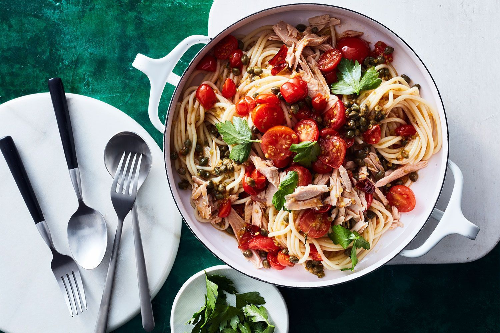

Spaghetti with spicy tuna ragout

This store-cupboard supper is the perfect midweek pick-me-up that's ready in less than two-steps.
Pork schnitzel with apple salad
 Winter holidays are filled with heartwarming favourites, like this hearty and flavoursome pork schnitzel
dish.
Winter holidays are filled with heartwarming favourites, like this hearty and flavoursome pork schnitzel
dish.
Zucchini fritters with prosciutto and bocconcini salad
 Create a gourmet dinner in minutes with these stylish zucchini fritters served with prosciutto and
bocconcini.
Create a gourmet dinner in minutes with these stylish zucchini fritters served with prosciutto and
bocconcini.
Prosciutto, cheddar and polenta frittata
 With plenty of cheese and delicious prosciutto, this midweek meal is one the whole family will love.
It's
also makes for
perfect lunch leftovers.
With plenty of cheese and delicious prosciutto, this midweek meal is one the whole family will love.
It's
also makes for
perfect lunch leftovers.